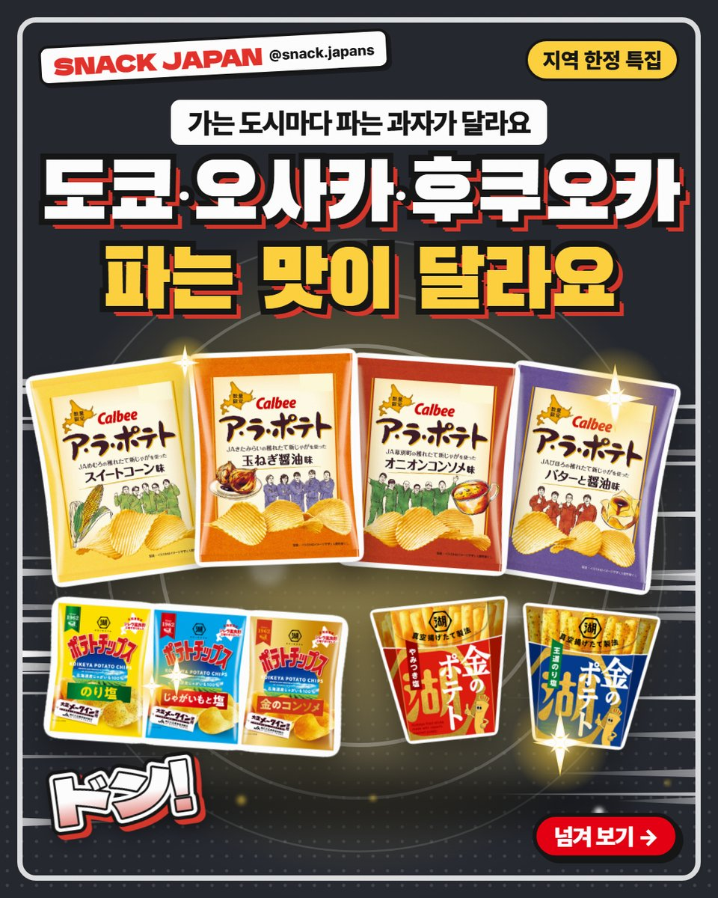
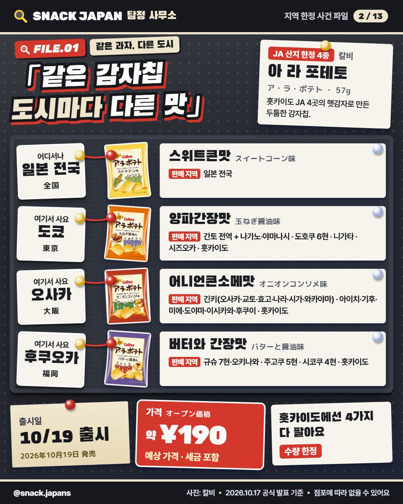
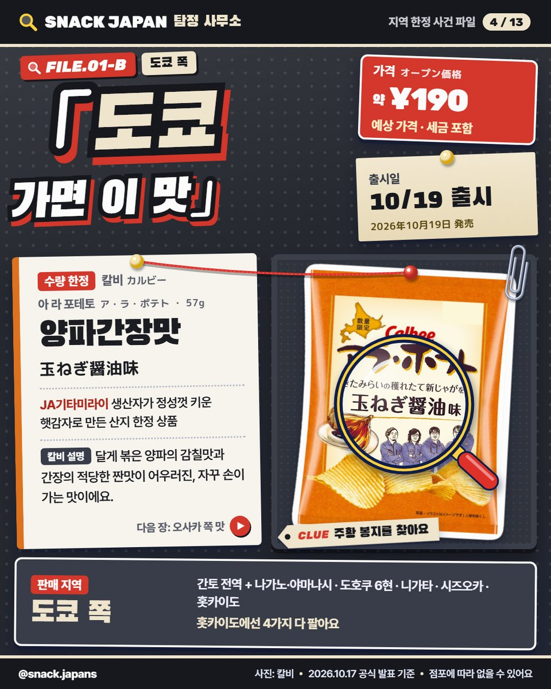
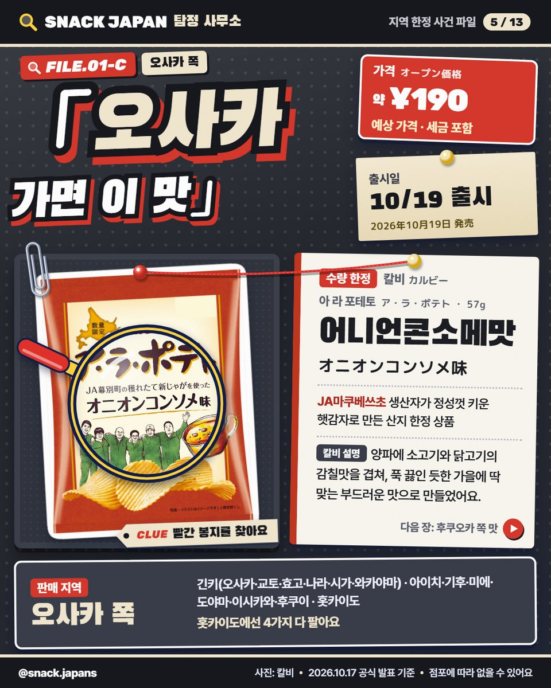
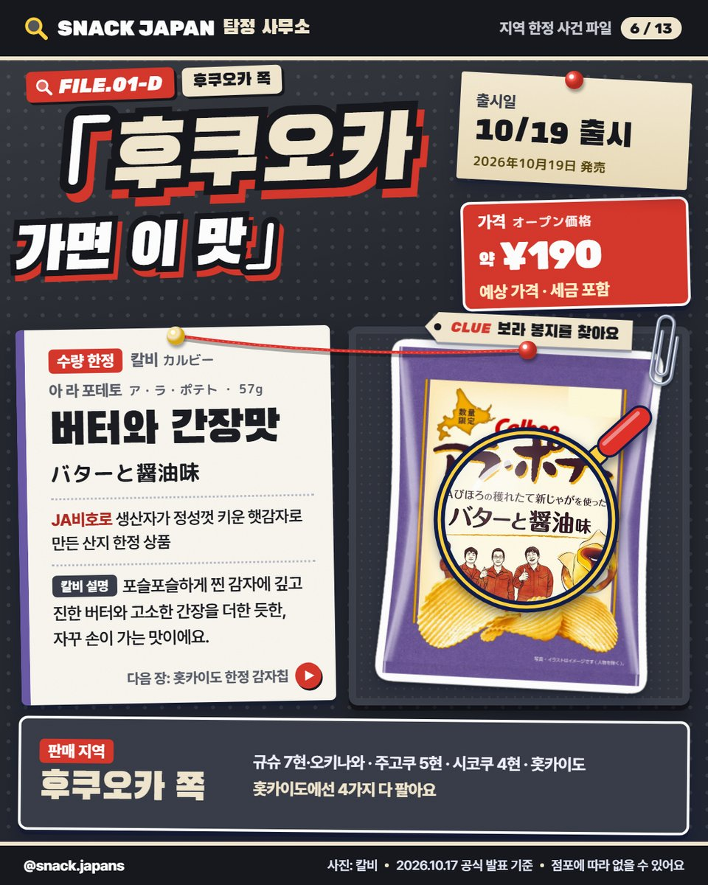
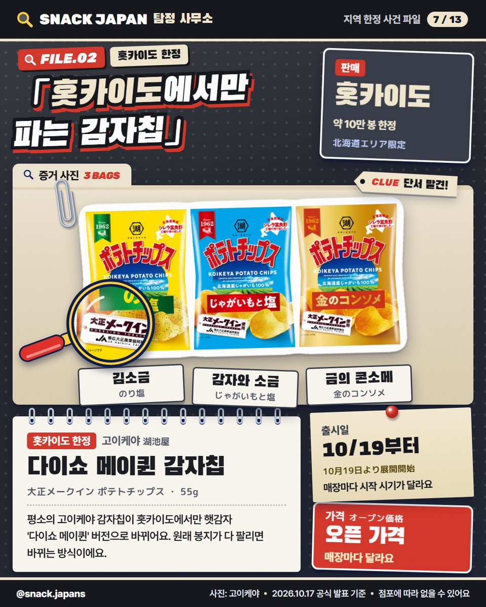
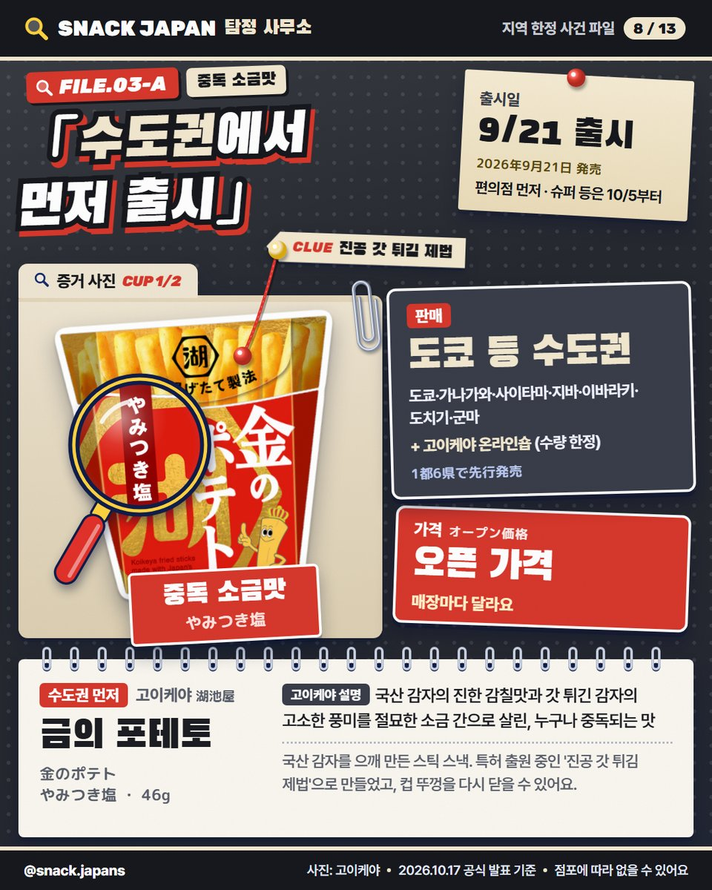
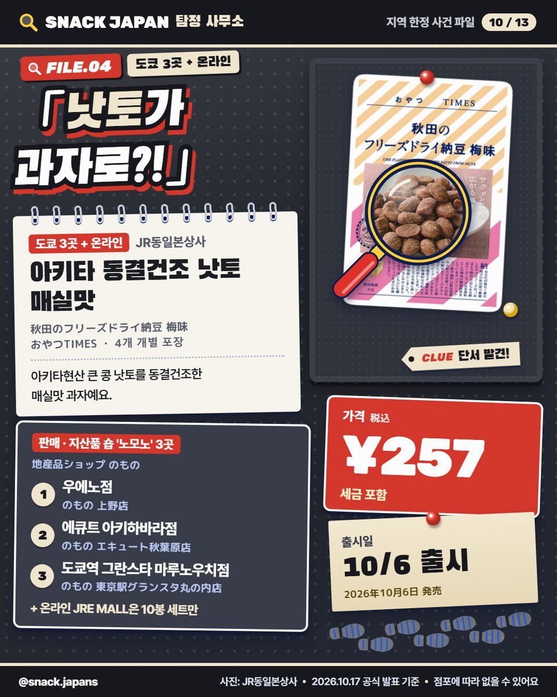
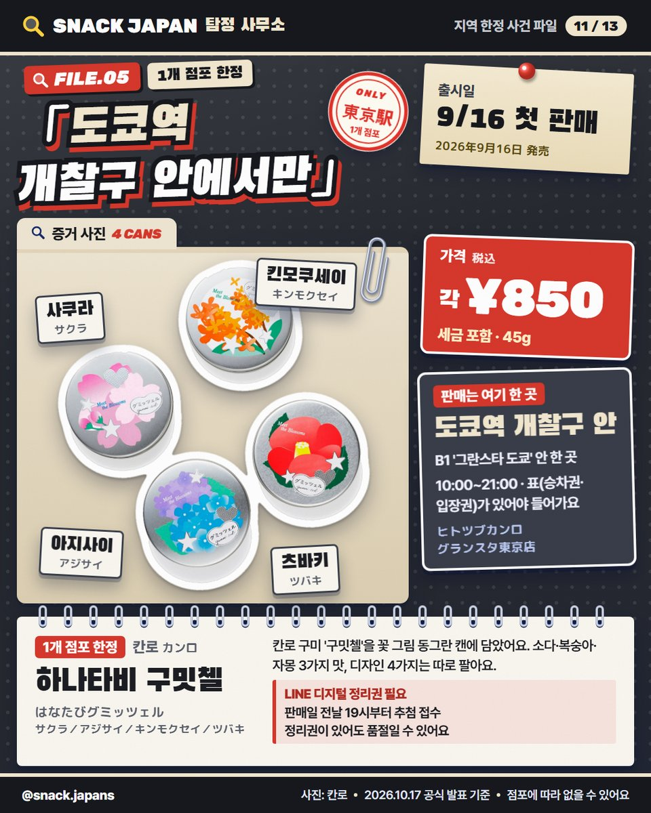

일본 지역 한정 과자 5가지, 도쿄·오사카·후쿠오카 파는 맛이 달라요
같은 감자칩인데 도시마다 맛이 다르다고요?! 홋카이도 한정 감자칩부터 도쿄역 개찰구 안에서만 파는 구미까지, 지역·점포 한정 과자를 모았어요.
도쿄에서 파는 감자칩 맛이
오사카엔 없다고요?? 🔍
일본은 가는 도시마다
파는 과자가 달라요!
지역·점포 한정 과자 5가지,
공식 발표 기준으로 수사해 봤어요.

1. 아 라 포테토 JA 산지 한정 4종 (칼비)
같은 감자칩인데
맛마다 파는 지역이 달라요.
홋카이도 JA 4곳의 햇감자로 만든 두툼한 감자칩이에요.
- 출시: 10/19(월), 수량 한정 (없어지면 끝)
- 칼비 공식 온라인숍·직영점 '칼비 플러스'에서도 수량 한정
- 일본 이름: ア・ラ・ポテト
- 가격: 사진 카드에 정리해 뒀어요

- 스위트콘맛 (노란 봉지): 일본 전국
- 양파간장맛 (주황 봉지): 도쿄 쪽
- 어니언콘소메맛 (빨간 봉지): 오사카 쪽
- 버터와 간장맛 (보라 봉지): 후쿠오카 쪽
- 홋카이도에선 4가지 다 팔아요

도쿄 쪽은 양파간장맛!
달게 볶은 양파의 감칠맛과
간장의 적당한 짠맛이 어우러진 맛이래요 (칼비 설명).
- 파는 곳: 간토 전역 + 나가노·야마나시, 도호쿠 6현, 니가타, 시즈오카, 홋카이도
- 일본 이름: 玉ねぎ醤油味

오사카 쪽은 어니언콘소메맛!
양파에 소고기·닭고기 감칠맛을 겹쳐
푹 끓인 듯한 부드러운 맛으로 만들었대요 (칼비 설명).
- 파는 곳: 긴키(오사카·교토·효고·나라·시가·와카야마), 아이치·기후·미에·도야마·이시카와·후쿠이, 홋카이도
- 일본 이름: オニオンコンソメ味

후쿠오카 쪽은 버터와 간장맛!
포슬포슬하게 찐 감자에
진한 버터와 고소한 간장을 더한 듯한 맛이래요 (칼비 설명).
- 파는 곳: 규슈 7현·오키나와, 주고쿠 5현, 시코쿠 4현, 홋카이도
- 일본 이름: バターと醤油味
- 전국에서 파는 스위트콘맛은 スイートコーン味

2. 다이쇼 메이퀸 감자칩 (고이케야)
평소의 고이케야 감자칩이
홋카이도에서만 햇감자 '다이쇼 메이퀸' 버전으로 바뀌어요.
원래 봉지가 다 팔리면 바뀌는 방식이라
매장마다 시작 시기가 달라요.
- 파는 곳: 홋카이도 한정, 약 10만 봉
- 시작: 10/19(월)부터
- 맛: 김소금 · 감자와 소금 · 금의 콘소메
- 일본 이름: 大正メークイン ポテトチップス

3. 금의 포테토 (고이케야)
국산 감자를 으깨 만든 스틱 스낵이에요.
특허 출원 중인 '진공 갓 튀김 제법'으로 만들었고,
컵 뚜껑을 다시 닫을 수 있어요.
- 맛: 중독 소금맛 · 왕도 김소금맛
- 파는 곳: 도쿄·가나가와·사이타마·지바·이바라키·도치기·군마에서 먼저 출시
- 출시: 편의점 9/21(월), 슈퍼 등 10/5(월)부터
- 고이케야 온라인숍에도 수량 한정으로 있어요
- 일본 이름: 金のポテト (やみつき塩 / 王道のり塩)

4. 아키타 동결건조 낫토 매실맛 (JR동일본상사)
아키타현산 큰 콩 낫토를
동결건조한 매실맛 과자예요.
- 출시: 10/6(화), 4개 개별 포장
- 파는 곳: 지산품 숍 '노모노' 우에노점 · 에큐트 아키하바라점 · 도쿄역 그란스타 마루노우치점
- 온라인(JRE MALL)은 10봉 세트만
- 일본 이름: 秋田のフリーズドライ納豆 梅味

5. 하나타비 구밋첼 (칸로)
칸로 구미 '구밋첼'을 꽃 그림 동그란 캔에 담았어요.
소다·복숭아·자몽 3가지 맛이 들어 있고,
디자인 4가지(사쿠라·아지사이·킨모쿠세이·츠바키)는 따로 팔아요.
- 파는 곳: 도쿄역 개찰구 안 B1 '히토츠부 칸로 그란스타 도쿄점' 한 곳
- 첫 판매: 9/16(수)
- 시간: 10:00~21:00 (개찰구 안이라 승차권이나 입장권이 있어야 들어가요)
- LINE 디지털 정리권이 필요해요 (판매일 전날 19시부터 추첨 접수, 정리권이 있어도 품절일 수 있어요)
- 일본 이름: はなたびグミッツェル
총평
- 추천: 도쿄·오사카·후쿠오카·홋카이도 여행 가는 분, 그 지역에서만 사는 과자 찾는 분
- 기준: 10월 17일 공식 발표
- 참고: 한정 상품이라 판매가 끝날 수 있고, 점포에 따라 없을 수 있어요
다음 사건 현장은 어느 도시예요? 🗾
여행 전에 저장해 두세요!
사진: 칼비 · 고이케야 · JR동일본상사 · 칸로